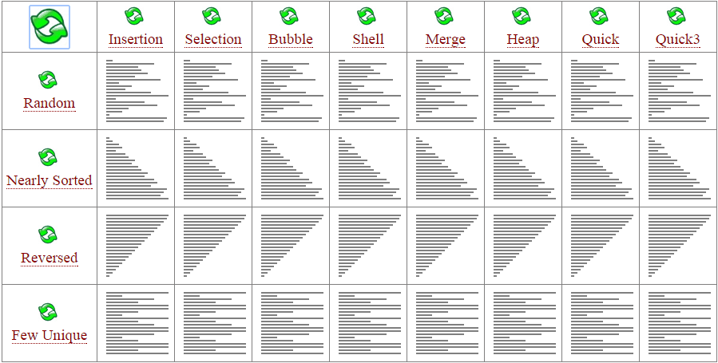

A ordenação é um dos problemas mais importantes em computação. Quase todos os problemas em computação podem ser resolvido mais eficientemente quando os dados estão ordenados. Existem alguns excelentes algoritmos de ordenação que alcançam o limite inferior de n lg n comparações, onde n é o tamanho da entrada.
Hoje vamos pensar em uma nova forma de ordenação. Seja A[1..n] um vetor de n números inteiros. Suponha que seu computador possui apenas a operação (Flip), que troca o valor de duas posições consecutivos A[i] e A[i+1], 1 ≤ i ≤ n-1. Pensando um pouco, você vai ver que é sempre possível ordenar A[1..n] utilizando apenas a operação Flip.
Para avaliar essa nova abordagem, seu trabalho é escrever um programa de computador que receba como entrada um conjunto A[1..n] de inteiros, e calcule o número mínimo de operações de Flip necessárias para ordenar A[1..n]. Por exemplo, para ordenar {2, 3, 1} são necessárias 2 operações de Flip.
Uma forma eficiente de contar o número mínimo de operações de Flip necessárias é utilizando o algoritmo Merge Sort.
A entrada contém K casos de testes, K ≤ 100000.
Cada caso de teste começa com um inteiro positivo N (N ≤ 1000) que corresponde a quantidade de números do conjunto A.
Em seguida, são informados os N valores inteiros A[1] A[2] ... A[n].
A entrada termina quando N é igual à zero.
Para cada conjunto de dados imprima:
Minimum exchange operations : M
onde M é o número mínimo de operações necessárias para realizar a ordenação.
Utilize uma linha separada para cada caso de teste.
| Entrada | Saída |
|---|---|
5 6 2 1 5 4 8 3 5 8 2 1 9 7 0 2 0 0 0 |
Minimum exchange operations : 6 Minimum exchange operations : 16 Minimum exchange operations : 0 |
| Entrada | Saída |
|---|---|
5 1 2 3 4 5 8 1 3 5 2 4 6 8 7 4 4 3 2 1 0 |
Minimum exchange operations : 0 Minimum exchange operations : 4 Minimum exchange operations : 6 |
Seu algoritmo precisa ser de divisão e conquista. DICA: a partir de um dos exemplos vistos em aula.